Research Highlights
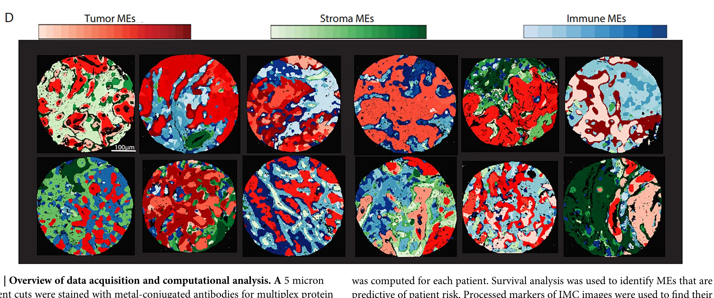
Prediction of outcome from spatial protein profiling of triple-negative breast cancers
We developed a computational method (SparTile) that maps distinct "microenvironments" within tumor tissue - regions with a shared local mix of proteins - directly from multiplex protein imaging, without needing to first identify individual cells. Applied to 88 triple-negative breast cancer patients, it revealed that tumor regions rich in a specific immune-signaling protein (MX1) mixed with immune cells predicted worse survival, and more broadly, that the physical distance between tumor cells and immune cells is itself a strong, independent predictor of outcome - a result we confirmed in two separate external patient datasets.
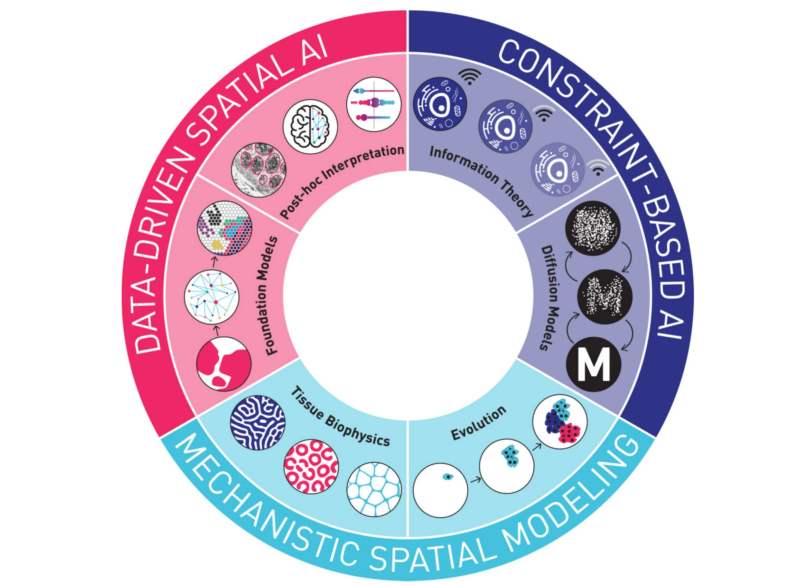
Emerging AI approaches for cancer spatial omics
A review organizing the fast-growing field of AI for cancer spatial omics (data that captures where molecules and cells are located within a tumor, not just what's present) into three paradigms, shown here: data-driven spatial AI (flexible but harder to interpret models like foundation models), constraint-based spatial AI (models guided by physical/informational principles like diffusion), and mechanistic spatial modeling (models built directly from biological mechanisms like tissue biophysics and tumor evolution). Argues the field's central open problem is building spatial AI models that are both powerful and interpretable, rather than one or the other.
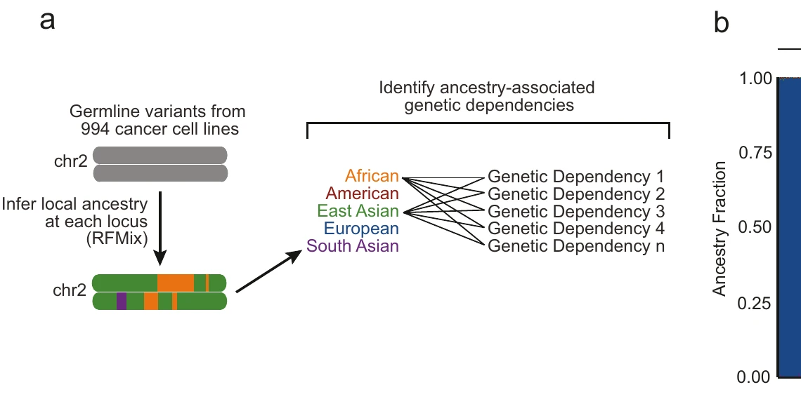
Germline variation contributes to false negatives in CRISPR-based experiments with varying burden across ancestries
CRISPR gene-editing guides are designed against a reference genome, but everyone's DNA differs from that reference in small ways - and those differences (germline variants) can create a mismatch that weakens the guide's cutting efficiency. We found this hidden technical bias disproportionately affects cell lines from individuals of recent African descent (whose genomes differ more from the reference), and it was creating fake "ancestry-linked genetic dependencies" in cancer datasets that are actually just guide-design artifacts, not real biology. We corrected this in the Cancer Dependency Map's data release and built a public tool to help researchers design less ancestry-biased CRISPR guides going forward.
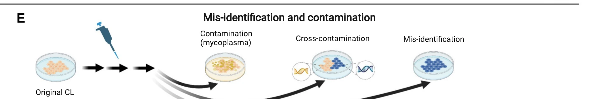
Computational estimation of quality and clinical relevance of cancer cell lines
A review of the computational methods used to check how well lab-grown cancer cell lines actually represent real patient tumors, which is essential since cell lines are the workhorse of cancer drug discovery. One major, surprisingly mundane problem this review highlights: cell line mix-ups. A line can get contaminated (commonly by mycoplasma), cross-contaminated with another line, or simply mislabeled somewhere along the way - and these identity errors have affected thousands of published studies, on top of more subtle issues like cell lines drifting genetically over time or lacking the tumor microenvironment entirely.
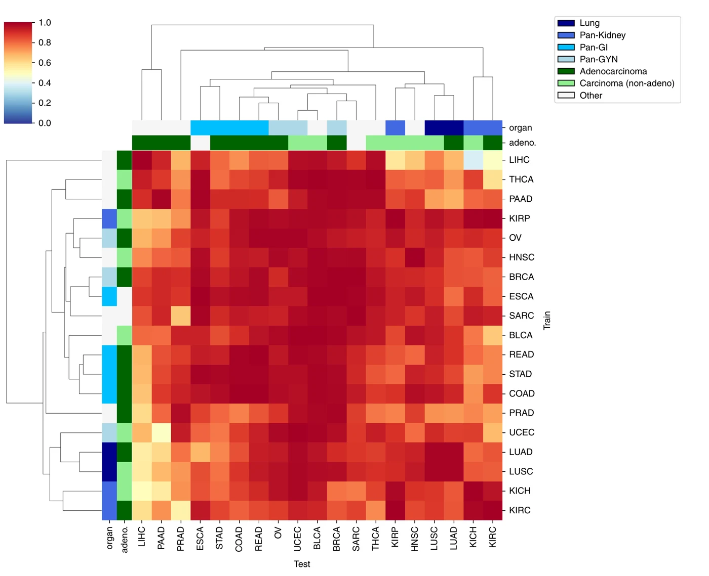
Deep learning-based cross-classifications reveal conserved spatial behaviors within tumor histological images
We trained neural networks to spot tumor tissue in microscope images across 19 different cancer types. The surprise: a network trained on one cancer type could often recognize tumor tissue in a completely different cancer type just as well - revealing that cancers share visual, structural patterns that aren't unique to each tissue. Breast, bladder, and uterine cancers turned out to be the most "universal" - models trained on them generalized best across other cancer types.
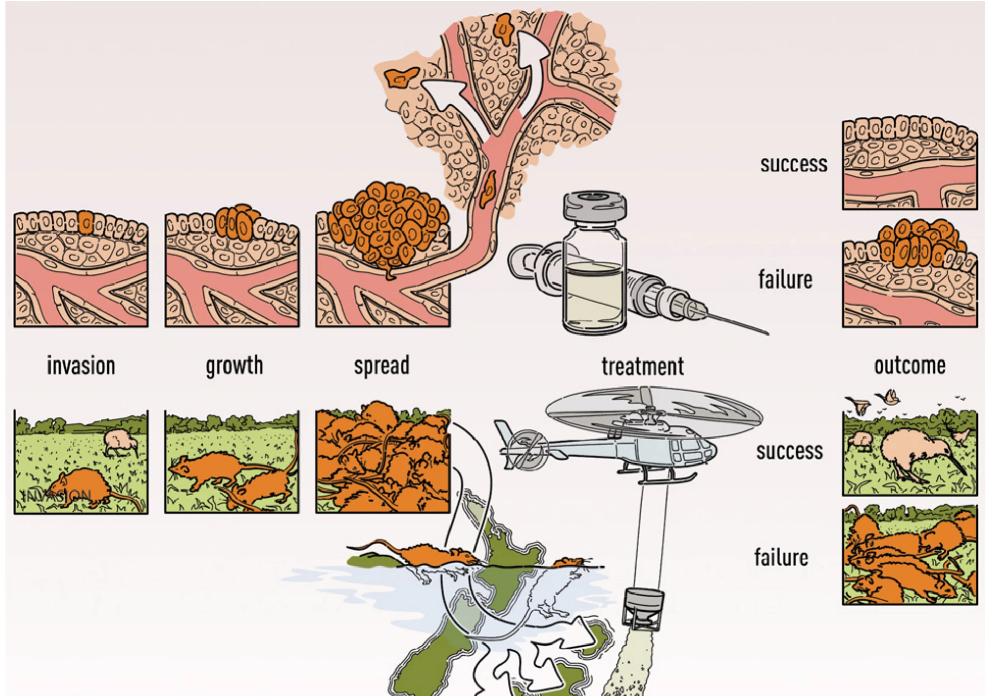
Treating Cancer as an Invasive Species
Cancers and invasive species (like rats introduced to islands) face a similar biological challenge: an invading population that grows and spreads within a host system. We compared real-world outcome data from both fields - island invasive-species eradications succeed 91% of the time on average, versus 52% for cancer treatments - and traced the difference to genetics: invasive rats are far more genetically distinct from native birds than a cancer cell is from a normal cell, making rats much easier to target selectively. This comparison points to new cancer strategies borrowed from invasion biology, like deliberately engineering tumor heterogeneity to make it easier to control.
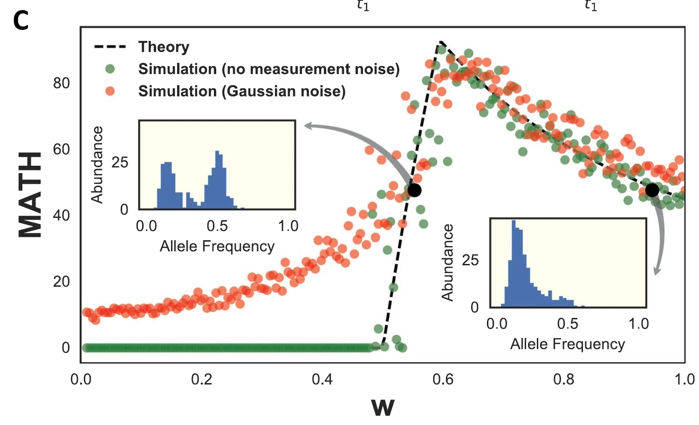
Distribution-based measures of tumor heterogeneity are sensitive to mutation calling and lack strong clinical predictive power
A common way to score how genetically diverse a tumor is ("MATH score") is used to try to predict patient survival. We found two problems: first, the score changes substantially depending on which mutation-detection software is used on the exact same data, and second, mathematically, very different tumor evolution histories can produce the identical score - shown here by two example tumors (the black dots) with wildly different underlying mutation patterns (the insets) that nonetheless land on the same MATH value. Much of the score's apparent link to survival turned out to be driven by copy-number variation, not the heterogeneity it was designed to measure.
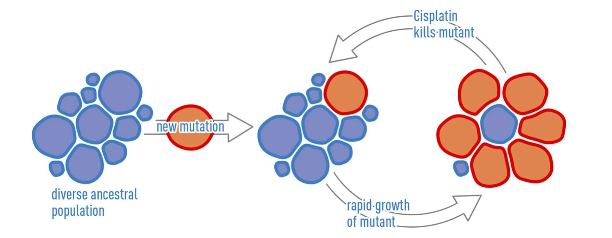
High-Resolution Deconstruction of Evolution Induced by Chemotherapy Treatments in Breast Cancer Xenografts
We grew triple-negative breast tumors from two patients in mice (patient-derived xenografts) and treated them with different chemotherapies, using extremely precise droplet digital PCR to track the tumors' genetic subclones. In one tumor, a new mutation created a fast-growing but cisplatin-sensitive subclone (red) alongside the older, more diverse population (blue) - so cisplatin preferentially kills the mutant, but it regrows quickly whenever treatment stops. This kind of asymmetry, where one subclone grows faster but is more killable, is exactly the setup that makes a tumor a good candidate for adaptive therapy: cycling treatment on and off to keep the sensitive population in check rather than eliminating it outright.
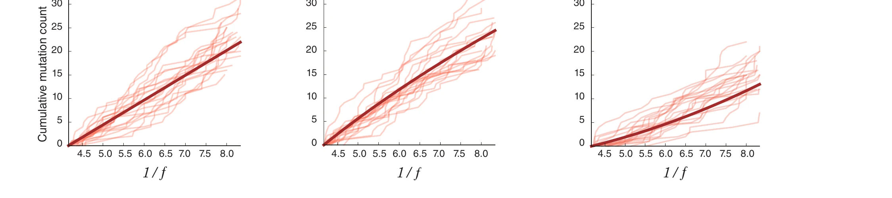
Uncertainties in tumor allele frequencies limit power to infer evolutionary pressures
A prior study had concluded that most tumors evolve "neutrally" (without strong selection pressure) because a simple mathematical model fit the mutation data well. We showed that's not convincing: measurement noise alone is large enough that data generated from three very different underlying processes - neutral evolution, positive selection, and negative selection - all produce curves that look just as consistent with the "neutral" model. In other words, a good statistical fit isn't enough evidence to conclude how a tumor evolved; the noise in the data can hide the real signal.
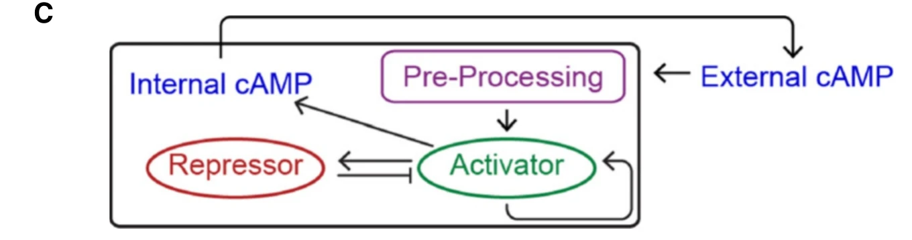
From intracellular signaling to population oscillations: bridging size- and time-scales in collective behavior
We modeled a single amoeba cell's response to the chemical signal cAMP as the simple circuit shown here: an "activator" that both boosts internal cAMP and triggers a slower "repressor" that shuts itself back down. Tested directly against real single-cell microscopy measurements, this activator-repressor loop correctly predicted a subtle, previously unexplained behavior - a low dose of cAMP produces one transient pulse, while a high dose triggers sustained rhythmic oscillations - and further predicted that cells respond to how fast the signal is changing, not just its absolute level, which we then confirmed experimentally.
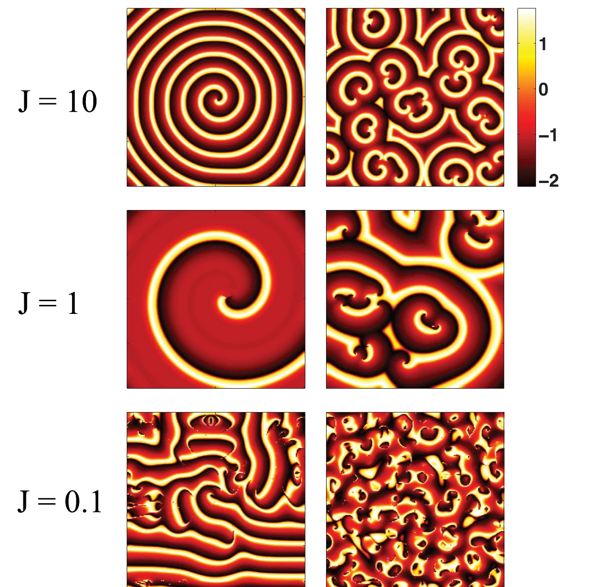
Modeling oscillations and spiral waves in Dictyostelium populations
Social amoebas coordinate their swarming behavior by pulsing a chemical signal back and forth to each other. We built a mathematical model of individual cells as "excitable" units and showed how, purely from noisy cell-to-cell communication (no cell is a designated pacemaker), a population can lock into synchronized pulsing - or fail to, depending on background chemical levels. Extending the model across space naturally produced spiral wave patterns like the ones shown here, which dissolve into more fragmented patterns as the chemical signal degrades faster.
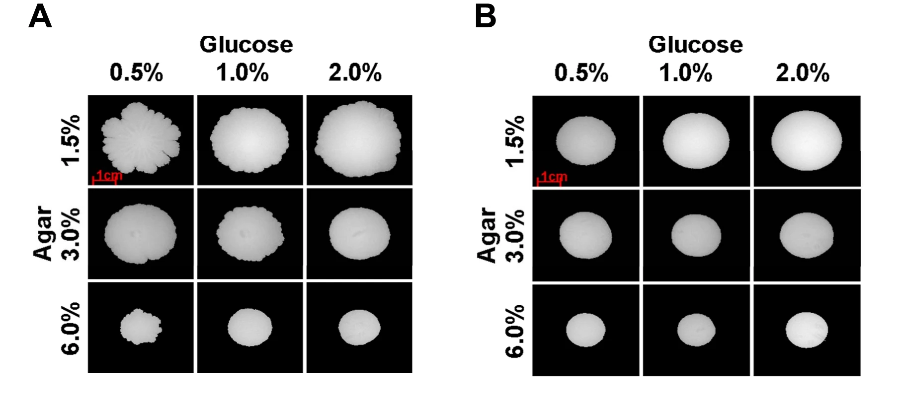
Two-Dimensionality of Yeast Colony Expansion Accompanied by Pattern Formation
A single gene (FLO11) makes yeast cells stick to their growth surface, forcing the colony to spread flat in two dimensions instead of growing upward into a 3D blob - shown here as the wrinkled, irregular colonies (top row) versus the smooth, round ones without the gene (bottom row). We built a physical model showing this 2D constraint, similar to how a shrinking film wrinkles a stiffer skin on top of it, explains the colony's rippled surface pattern. Surprisingly, this 2D-constrained growth mode also gave cells a competitive edge - when grown together, colonies with the gene expanded and enveloped the ones without it.
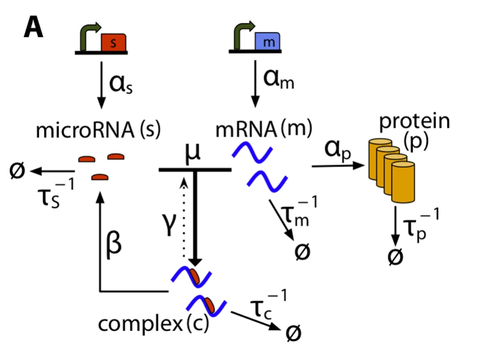
Intrinsic Noise of microRNA-Regulated Genes and the ceRNA Hypothesis
MicroRNAs and bacterial small RNAs both silence genes by binding and degrading their target messenger RNA, but through very different molecular mechanisms - one reuses itself to degrade many targets, the other is typically consumed in the process. We built a mathematical model (diagrammed here) of gene regulation by both types of molecule and found that despite this mechanistic difference, the resulting cell-to-cell variability ("noise") in gene expression is nearly identical - suggesting noise is governed by the regulatory network's structure, not the specific molecular machinery carrying it out.